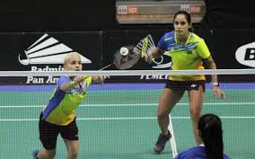

Badminton
Criado por militares britanicos
o badminton é uma modalidade esportiva praticada entre
adversários que utilizam raquetes para rebater uma peteca.
O objetivo é fazer com que a peteca atinja a área do adversário.Os competidores
(podem ser duplas ou apenas um atleta contra o outro) ficam em áreas divididas
por uma rede, semelhante ao tênis.
O seu objetivo durante um jogo é marcar 21 pontos antes do seu adversário
com 2 pontos de diferença, no mínimo até 29-29. De seguida,
o primeiro que alcançar os 30 pontos ganha o set.
Deve ganhar dois sets para obter a vitória. O badminton é fácil
mas não é por isso que é menos divertido e dinâmico.
Já houve várias situações de venda envolvendo o esporte,
como a venda de direitos de transmissão, a venda de jogadores
e a venda de uma marca.

Badminton